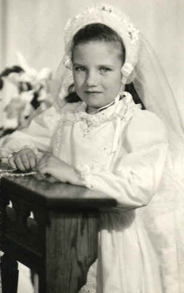
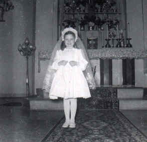
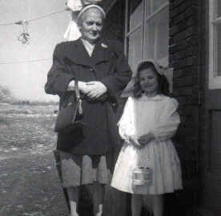
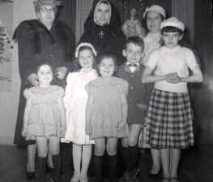

CHRISTIANE DEVANT L'AUTEL APRÈS LA CHRISTIANE ET SA GRAND-MÈRE
CÉRÉMONIE ÉZILDA CONSIGNY (SUR LA GALERIE
ARRIÈRE À ST-LUC)

EN VISITE AU COUVENT DE GHISLAINE
MARIE-ANNA CARON GHISLAINE JACQUELINE
LUCIE CHRISTIANE FRANCINE ANDRÉ NICOLE
CHRISTIANE NÉE EN 1950 EST LA FILLE DE GÉRARD CHARETTE ET DE JACQUELINE CONSIGNY.